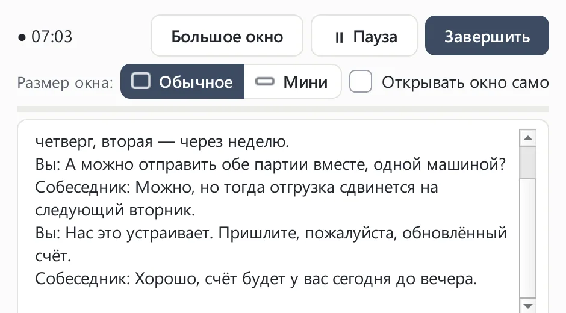

Как записать созвон и получить текст
Выберите источник
Для разговора в комнате выберите «Записать встречу». Для видеозвонка — «Записать созвон», чтобы записать и ваш голос, и собеседника.
Отмечайте главное по ходу
Текст появляется во время разговора, через 10–30 секунд. Отмечайте решения, вопросы и задачи. Окно «Поверх окон» можно держать над звонком в размере «Обычное» или «Мини».
Соберите итоги
Откройте запись, проверьте имена и реплики. Соберите документ целиком или включите в него только отмеченные фрагменты.
